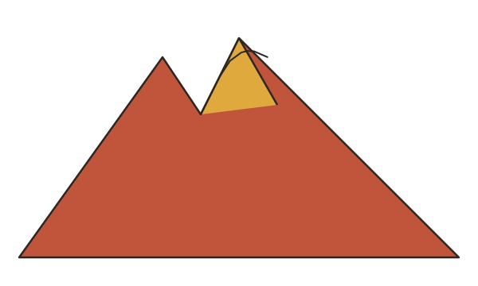
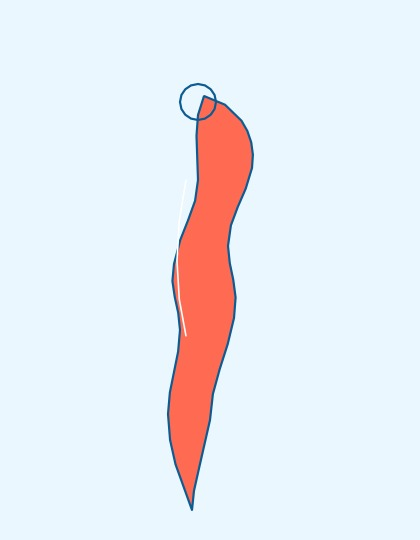
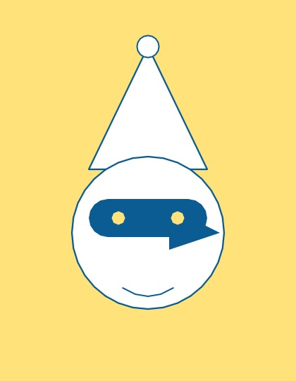
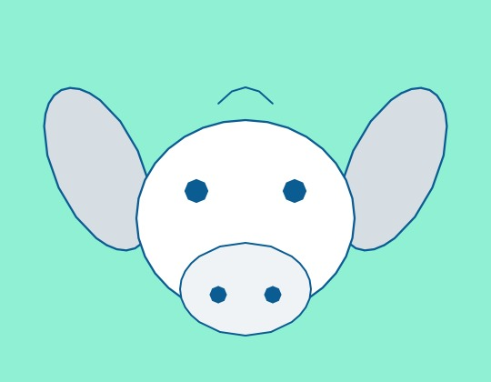

<!doctype html>
<html lang="it">
<head>
<meta charset="UTF-8" />
<meta name="viewport" content="width=device-width, initial-scale=1.0" />
<title>Tumbulella — La Tombola Napoletana che Racconta Storie</title>
<meta name="description" content="Gioca a tombola con la Smorfia napoletana e ascolta una storia buffa che si costruisce numero dopo numero, generata dall'AI in napoletano, italiano, inglese o spagnolo." />
<link rel="canonical" href="https://tumbulella.it/" />
<link rel="icon" href="/favicon.ico" sizes="any" />
<link rel="icon" href="img/favicon-192.png" type="image/png" sizes="192x192" />
<link rel="apple-touch-icon" href="img/apple-touch-icon.png" />
<meta property="og:title" content="Tumbulella — La Tombola Napoletana che Racconta Storie" />
<meta property="og:description" content="Gioca a tombola con la Smorfia napoletana e ascolta una storia buffa che si costruisce numero dopo numero, generata dall'AI in napoletano, italiano, inglese o spagnolo." />
<meta property="og:image" content="https://tumbulella.it/img/og-image.jpg" />
<meta property="og:url" content="https://tumbulella.it/" />
<meta property="og:type" content="website" />
<meta property="og:locale" content="it_IT" />
<meta name="twitter:card" content="summary_large_image" />
<meta name="twitter:title" content="Tumbulella — La Tombola Napoletana che Racconta Storie" />
<meta name="twitter:description" content="Gioca a tombola con la Smorfia napoletana e ascolta una storia buffa che si costruisce numero dopo numero, generata dall'AI in napoletano, italiano, inglese o spagnolo." />
<meta name="twitter:image" content="https://tumbulella.it/img/og-image.jpg" />
<script type="application/ld+json">
{
  "@context": "https://schema.org",
  "@type": "WebApplication",
  "name": "Tumbulella",
  "description": "Gioca a tombola con la Smorfia napoletana e ascolta una storia buffa che si costruisce numero dopo numero, generata dall'AI in napoletano, italiano, inglese o spagnolo.",
  "url": "https://tumbulella.it/",
  "image": "https://tumbulella.it/img/og-image.jpg",
  "applicationCategory": "GameApplication",
  "operatingSystem": "Web",
  "inLanguage": ["nap", "it", "en", "es"],
  "offers": {
    "@type": "Offer",
    "price": "0",
    "priceCurrency": "EUR"
  }
}
</script>
<!-- Google AdSense: script di verifica/auto-ads. L'ID cliente è pubblico
     per design (compare nell'HTML di ogni sito con AdSense), non è un
     segreto. Da affiancare a un vero <ins class="adsbygoogle"> quando
     avremo lo slot dell'unità pubblicitaria (il placeholder di esempio è
     stato rimosso). Caricato solo su http/https, MAI su file:// — aperto in locale
     (doppio click sul file) il tag <script> statico verso un dominio
     pubblicitario reale blocca il caricamento dell'intera pagina (pagina
     bianca): probabilmente Chrome resta in attesa indefinita della risposta
     di rete per una risorsa cross-origin caricata da un'origine file://
     opaca. Su Netlify (https://) funziona regolarmente, verificato da
     Google in fase di revisione AdSense. -->
<script>
  if (location.protocol !== "file:") {
    var adsenseScript = document.createElement("script");
    adsenseScript.async = true;
    adsenseScript.src = "https://pagead2.googlesyndication.com/pagead/js/adsbygoogle.js?client=ca-pub-4408823948381158";
    adsenseScript.crossOrigin = "anonymous";
    document.head.appendChild(adsenseScript);
  }
</script>
<link rel="preconnect" href="https://fonts.googleapis.com" />
<link rel="preconnect" href="https://fonts.gstatic.com" crossorigin />
<link href="https://fonts.googleapis.com/css2?family=Baloo+2:wght@500;600;700;800&family=Poppins:wght@400;500;600;700&display=swap" rel="stylesheet" />
<script src="https://unpkg.com/react@18/umd/react.development.js"></script>
<script src="https://unpkg.com/react-dom@18/umd/react-dom.development.js"></script>
<script src="https://unpkg.com/@babel/standalone/babel.min.js"></script>
<script src="https://cdn.tailwindcss.com"></script>
<script>
  tailwind.config = {
    theme: {
      extend: {
        colors: {
          napoli: {
            50: '#eaf7ff',
            100: '#cceeff',
            200: '#99ddff',
            300: '#5cc6f7',
            400: '#2caeef',
            500: '#0f92e0',
            600: '#0a72b8',
            700: '#0c5c94',
            800: '#0e4c78',
            900: '#0c3b5e',
          },
          coral: {
            400: '#ff8a71',
            500: '#ff6b52',
            600: '#f0492f',
          },
          lemon: {
            300: '#ffe27a',
            400: '#ffd23f',
            500: '#fcc419',
          },
          mint: {
            300: '#8ff0d4',
            400: '#5ce0bb',
          },
        },
        fontFamily: {
          display: ['"Baloo 2"', 'cursive'],
          body: ['"Poppins"', 'sans-serif'],
        },
        borderRadius: {
          xl2: '1.4rem',
        },
      },
    },
  };
</script>
<style>
  body {
    background: radial-gradient(circle at 15% 0%, #5cc6f7 0%, #0f92e0 45%, #0a72b8 100%);
    min-height: 100vh;
  }
  .glass {
    background: rgba(255,255,255,0.94);
    backdrop-filter: blur(10px);
  }
  .cell-bounce { animation: bounce .45s cubic-bezier(.36,1.5,.5,1); }
  @keyframes bounce {
    0% { transform: scale(1); }
    45% { transform: scale(1.28) rotate(-4deg); }
    75% { transform: scale(0.94) rotate(2deg); }
    100% { transform: scale(1) rotate(0); }
  }
  .float { animation: floaty 4s ease-in-out infinite; }
  @keyframes floaty {
    0%, 100% { transform: translateY(0px); }
    50% { transform: translateY(-8px); }
  }
  .wave-dot { animation: waveDot 1s ease-in-out infinite; }
  @keyframes waveDot {
    0%, 100% { transform: scaleY(0.4); }
    50% { transform: scaleY(1); }
  }
  .pop-in { animation: popIn .4s cubic-bezier(.34,1.56,.64,1) both; }
  @keyframes popIn {
    from { opacity: 0; transform: scale(.8) translateY(10px); }
    to { opacity: 1; transform: scale(1) translateY(0); }
  }
  ::-webkit-scrollbar { width: 8px; }
  ::-webkit-scrollbar-thumb { background: #99ddff; border-radius: 10px; }
  .pulse-soft { animation: pulseSoft 1.2s ease-in-out infinite; }
  @keyframes pulseSoft {
    0%, 100% { opacity: 0.35; }
    50% { opacity: 1; }
  }
  /* Select circolare (pulsante lingua): niente freccia nativa, testo
     centrato — uniforme in forma agli altri pulsanti rotondi dell'header. */
  .lang-select-round {
    -webkit-appearance: none;
    appearance: none;
    text-align: center;
    text-align-last: center;
    padding: 0;
  }
</style>
</head>
<body class="font-body">
  <div id="root"></div>
  <script src="src/data.js"></script>
  <script type="text/babel">
const { useState, useRef, useEffect, useCallback } = React;

// ---------- Icone ----------
// Icone in file JPG (concept-b/img/) invece che SVG inline nel codice, così
// si possono sostituire semplicemente cambiando il file, senza toccare il
// codice. Generate una tantum da backend/generate_icons.py a partire dal
// design originale; ridisegnabili a mano in qualunque editor di immagini.
function VesuvioIcon({ className }) {
  return ;
}
// ---------- Sticker decorativi flat/playful (finestra racconto vuota) ----------
function CornettoSticker({ className }) {
  return (
    
  );
}
function PulcinellaSticker({ className }) {
  return (
    
  );
}
function CiuccioSticker({ className }) {
  return (
    
  );
}

// ---------- UI ----------
function LanguageSelector({ language, setLanguage, disabled }) {
  return (
    <select
      value={language}
      onChange={(e) => setLanguage(e.target.value)}
      disabled={disabled}
      title={disabled ? "Bloccato per tutta la partita — premi \"Nuova storia\" per cambiarlo" : "Lingua del racconto"}
      className={"lang-select-round w-11 h-11 rounded-full bg-white shadow-md text-xs font-bold text-napoli-700 shrink-0 text-center " + (disabled ? "opacity-50 cursor-not-allowed" : "cursor-pointer hover:scale-105 active:scale-95 transition-transform")}
      aria-label="Lingua del racconto"
    >
      {window.LANGUAGES.map((l) => (
        <option key={l.code} value={l.code}>{l.short}</option>
      ))}
    </select>
  );
}

// Finestra "Cosa è": legge il contenuto da window.ABOUT_CONTENT (src/data.js),
// che a sua volta è estratto da cosa-e-tumbulella.docx — cambiando il testo lì
// cambia anche quello mostrato qui, senza toccare questo componente.
function AboutModal({ onClose, language }) {
  const c = window.ABOUT_CONTENT[language] || window.ABOUT_CONTENT.nap;
  return (
    <div
      className="fixed inset-0 z-50 flex items-center justify-center p-4 bg-napoli-900/60 backdrop-blur-sm"
      onClick={onClose}
    >
      <div
        className="glass rounded-xl2 w-full max-w-lg max-h-[85vh] overflow-y-auto p-5 sm:p-6 shadow-2xl"
        onClick={(e) => e.stopPropagation()}
      >
        <div className="flex items-start justify-between gap-3 mb-1">
          <h2 className="font-display font-extrabold text-xl text-napoli-800">{c.title}</h2>
          <button
            onClick={onClose}
            aria-label="Chiudi"
            className="w-8 h-8 rounded-full bg-napoli-50 hover:bg-napoli-100 flex items-center justify-center text-napoli-700 shrink-0 transition-colors"
          >
            ✕
          </button>
        </div>
        <p className="text-sm text-napoli-700/70 italic mb-1">{c.tagline}</p>
        {c.downloadLink && (
          <p className="text-sm mb-4">
            <a
              href={c.downloadLink.href}
              target="_blank"
              rel="noopener noreferrer"
              className="font-bold text-napoli-600 underline hover:text-napoli-800 transition-colors"
            >
              {c.downloadLink.text}
            </a>
          </p>
        )}
        {c.donation && (
          <div className="rounded-lg bg-napoli-50 border border-napoli-900/10 p-3 mb-4 text-sm text-napoli-900/80 leading-relaxed">
            <p className="mb-1.5">{c.donation.text}</p>
            <a
              href={c.donation.url}
              target="_blank"
              rel="noopener noreferrer"
              className="font-bold text-napoli-600 underline hover:text-napoli-800 transition-colors"
            >
              {c.donation.linkText}
            </a>
          </div>
        )}
        {c.sections.map((s, i) => (
          <div key={i} className="mb-4 last:mb-0">
            <h3 className="font-display font-bold text-base text-napoli-800 mb-1.5">{s.heading}</h3>
            {s.blocks.map((b, j) => {
              if (b.type === "list") {
                return (
                  <ul key={j} className="list-disc pl-5 space-y-1 text-sm text-napoli-900/80 mb-2">
                    {b.items.map((it, k) => (
                      <li key={k}>{it}</li>
                    ))}
                  </ul>
                );
              }
              if (b.type === "h4") {
                return (
                  <p key={j} className="font-bold text-sm text-napoli-800 mt-2 mb-1">
                    {b.text}
                  </p>
                );
              }
              return (
                <p key={j} className="text-sm text-napoli-900/80 leading-relaxed mb-2">
                  {b.text}
                </p>
              );
            })}
          </div>
        ))}
        {c.credit && (
          <p className="text-xs text-napoli-700/60 italic pt-3 mt-1 border-t border-napoli-900/10">
            {c.credit.text}{" "}
            <a
              href={`mailto:${c.credit.email}`}
              className="font-bold text-napoli-600 underline hover:text-napoli-800 transition-colors not-italic"
            >
              {c.credit.email}
            </a>
          </p>
        )}
      </div>
    </div>
  );
}

// Stato del "banditore": chiamata (fase 1) -> pausa (si cerca il numero) -> narrazione (fase 2) -> idle.
function NarratorStatus({ phase, currentCall, language }) {
  const labels = window.STATUS_LABELS[language] || window.STATUS_LABELS.nap;
  const active = phase === "calling" || phase === "narrando";
  let text = labels.idle;
  if (phase === "calling") text = "📢 " + currentCall;
  else if (phase === "pausa") text = labels.pausa;
  else if (phase === "narrando") text = labels.narrando;

  return (
    <div className={"flex items-center gap-2 px-3 py-1.5 rounded-full text-xs font-bold transition-colors max-w-full " + (active ? "bg-mint-300 text-napoli-900" : phase === "pausa" ? "bg-lemon-300 text-napoli-900" : "bg-gray-100 text-gray-400")}>
      <div className="flex items-end gap-0.5 h-3.5 w-5 shrink-0">
        {[0, 1, 2].map((i) => (
          <span
            key={i}
            className={"w-1 rounded-full bg-napoli-700 " + (active ? "wave-dot" : phase === "pausa" ? "pulse-soft" : "")}
            style={{ height: "100%", animationDelay: i * 0.12 + "s", opacity: active || phase === "pausa" ? 1 : 0.3 }}
          />
        ))}
      </div>
      <span className="truncate">{text}</span>
    </div>
  );
}

const CHIP_COLORS = ["bg-coral-500", "bg-lemon-500", "bg-mint-400", "bg-napoli-500"];

function NumberCell({ n, extracted, order, onClick }) {
  const color = CHIP_COLORS[n % CHIP_COLORS.length];
  return (
    <button
      onClick={() => onClick(n)}
      className={
        "relative aspect-square rounded-xl2 flex items-center justify-center font-display font-bold text-sm sm:text-base transition-all " +
        (extracted
          ? color + " text-white shadow-lg cell-bounce"
          : "bg-white text-napoli-800 border-2 border-napoli-100 hover:border-napoli-400 hover:-translate-y-0.5")
      }
    >
      {n}
      {extracted && (
        <span className="absolute -top-1 -right-1 bg-white text-napoli-800 text-[9px] font-extrabold rounded-full w-4 h-4 flex items-center justify-center shadow">
          {order}
        </span>
      )}
    </button>
  );
}

function Board({ extractedSet, extractedOrder, onCellClick }) {
  const numbers = Array.from({ length: 90 }, (_, i) => i + 1);
  return (
    <div className="glass rounded-xl2 p-4 sm:p-5 shadow-xl">
      <div className="flex items-center justify-between mb-3">
        <h2 className="font-display font-bold text-lg text-napoli-800">'O Tabbellone</h2>
        <span className="text-xs font-bold text-white bg-napoli-500 rounded-full px-2.5 py-1">{extractedOrder.length}/90</span>
      </div>
      <div className="grid grid-cols-9 gap-1.5 sm:gap-2">
        {numbers.map((n) => (
          <NumberCell
            key={n}
            n={n}
            extracted={extractedSet.has(n)}
            order={extractedOrder.indexOf(n) + 1}
            onClick={onCellClick}
          />
        ))}
      </div>
    </div>
  );
}

// Renderizza un testo con marcatori **grassetto** (usati dal backend per le
// parole Smorfia citate) come <strong>, senza dover parsare markdown generico.
function BoldText({ text }) {
  return window.splitBoldSegments(text).map((seg, i) =>
    seg.bold ? <strong key={i}>{seg.text}</strong> : <span key={i}>{seg.text}</span>
  );
}

function StoryPanel({ fragments, phase, currentCall, language }) {
  const scrollRef = useRef(null);
  useEffect(() => {
    if (scrollRef.current) scrollRef.current.scrollTop = scrollRef.current.scrollHeight;
  }, [fragments.length, fragments.map((f) => f.text).join("|")]);

  const emptyText = window.EMPTY_STATE_TEXT[language] || window.EMPTY_STATE_TEXT.nap;

  return (
    <div className="glass rounded-xl2 p-4 sm:p-5 shadow-xl flex flex-col h-full">
      <div className="flex items-center justify-between mb-3 gap-2">
        <h2 className="font-display font-bold text-lg text-napoli-800">'O Racconto</h2>
        <NarratorStatus phase={phase} currentCall={currentCall} language={language} />
      </div>
      <div ref={scrollRef} className="flex-1 overflow-y-auto pr-1 space-y-2.5 min-h-[220px] max-h-[420px]">
        {fragments.length === 0 ? (
          <div className="h-full flex flex-col items-center justify-center text-center gap-3 py-8">
            <div className="flex gap-2 float">
              <CiuccioSticker className="w-16" />
              <PulcinellaSticker className="w-14" />
              <CornettoSticker className="w-16" />
            </div>
            <p className="text-sm text-napoli-800/60 max-w-[220px] font-medium">{emptyText}</p>
          </div>
        ) : (
          fragments.map((f, i) =>
            f.text ? (
              <div key={i} className="pop-in bg-napoli-50 rounded-2xl rounded-tl-sm px-4 py-2.5 text-[14px] leading-relaxed text-napoli-900">
                <span className="font-display font-extrabold text-coral-500 mr-1">{f.n}</span>
                <BoldText text={f.text} />
              </div>
            ) : (
              <div key={i} className="pop-in bg-napoli-50/60 rounded-2xl rounded-tl-sm px-4 py-2.5 text-[14px] leading-relaxed text-napoli-900/40 italic">
                <span className="font-display font-extrabold text-coral-500/60 mr-1 not-italic">{f.n}</span>
                <span className="pulse-soft">…</span>
              </div>
            )
          )
        )}
      </div>
    </div>
  );
}

function App() {
  const [language, setLanguage] = useState("it");
  const [extractedOrder, setExtractedOrder] = useState([]);
  const [fragments, setFragments] = useState([]); // { n, text: string|null } — null finché la fase 2 non è pronta
  const [phase, setPhase] = useState("idle"); // idle | calling | pausa | narrando
  const [currentCall, setCurrentCall] = useState(null);
  const [muted, setMuted] = useState(false);
  const [showAbout, setShowAbout] = useState(false);
  const [exclamationEnabled, setExclamationEnabled] = useState(true);

  // Il pulsante "!" può essere spento dalla consolle admin (feature_flags.json)
  // se in produzione risultasse troppo usato — vedi window.fetchFeatureFlags
  // in data.js. Di default resta visibile finché la fetch non risponde, così
  // il comportamento resta quello di sempre se la chiamata è ancora in volo.
  useEffect(() => {
    window.fetchFeatureFlags().then(setExclamationEnabled);
  }, []);

  const orderRef = useRef([]); // fonte di verità sincrona per l'ordine estratti
  const lastSentencesRef = useRef([]); // ultime due frasi generate dal backend (FIFO) — unico contesto mandato indietro, costo pressoché costante per tutta la partita
  const queueRef = useRef([]); // coda dei numeri cliccati in attesa di "chiamata + narrazione"
  const processingRef = useRef(false);
  const sessionRef = useRef(0); // incrementato a ogni "nuova storia": invalida le sequenze in corso
  const gameSessionIdRef = useRef(window.newGameSessionId()); // ID di partita per il cruscotto admin (durate) — non è sessionRef sopra, concetti diversi
  const languageRef = useRef(language);
  const mutedRef = useRef(muted); // aggiornato in modo sincrono nell'unico punto che lo cambia (bottone muto), non via useEffect — stesso motivo di languageRef sotto

  // Aggiorna languageRef SUBITO, non tramite useEffect: se il cambio lingua
  // e il click sul primo numero avvengono a ridosso l'uno dell'altro,
  // l'effetto potrebbe non aver ancora girato quando playSequence legge
  // languageRef.current, leggendo la lingua precedente (bug osservato: primo
  // numero recitato nella lingua selezionata in precedenza, non in quella
  // appena scelta).
  function handleLanguageChange(newLang) {
    languageRef.current = newLang;
    setLanguage(newLang);
  }

  const extractedSet = new Set(extractedOrder);

  function sleep(ms, session) {
    return new Promise((resolve) => {
      setTimeout(() => resolve(sessionRef.current === session), ms);
    });
  }

  // Legge `text` ad alta voce (Web Speech API); se muto o non disponibile,
  // ricade su una pausa fissa della stessa durata approssimativa di sempre.
  async function speakOrWait(text, lang, fallbackMs, session) {
    const spoke = await window.speak(text, lang, mutedRef.current);
    if (sessionRef.current !== session) return false;
    if (!spoke) return sleep(fallbackMs, session);
    return true;
  }

  // Riproduce la sequenza a due fasi di un numero: chiamata -> pausa -> narrazione.
  // Ogni `await` verifica che la sessione sia ancora valida (nessun reset nel frattempo).
  async function playSequence(item, session) {
    const lang = languageRef.current;
    const previousNumbers = orderRef.current.slice(0, item.clickIndex);
    const isFirstTurn = previousNumbers.length === 0;

    setPhase("calling");
    const callText = window.buildCall(item.n, lang);
    setCurrentCall(callText);
    if (!(await speakOrWait(callText, lang, window.TIMING.CALL_MS, session))) return;

    setPhase("pausa");
    if (!(await sleep(window.TIMING.PAUSE_MS, session))) return;

    setPhase("narrando");
    const prefix = window.buildPrefix(item.n, lang);
    let narration;
    try {
      narration = await window.fetchNarration(item.n, lastSentencesRef.current, previousNumbers, lang, gameSessionIdRef.current);
    } catch (err) {
      if (sessionRef.current !== session) return;
      const errText =
        err && err.kind === "backend_error"
          ? (window.LLM_BACKEND_ERROR_PREFIX[lang] || window.LLM_BACKEND_ERROR_PREFIX.nap) + err.message + ")"
          : window.LLM_UNREACHABLE_TEXT[lang] || window.LLM_UNREACHABLE_TEXT.nap;
      setFragments((prev) => prev.map((f) => (f.n === item.n ? { ...f, text: prefix + errText } : f)));
      setPhase("idle");
      setCurrentCall(null);
      return;
    }
    if (sessionRef.current !== session) return;
    // Al turno 1 la frase statica (frasi-iniziali.txt) è generica e non
    // menziona la parola vera — senza questo arricchimento, sparirebbe dal
    // contesto e non sarebbe mai più recuperabile dal modello. Si arricchisce
    // solo ciò che va in memoria per i turni successivi, MAI ciò che si vede
    // o si sente ora (eviterebbe di ripetere il numero appena annunciato).
    const memorized = isFirstTurn ? window.meaningOnly(item.n, lang) + ". " + narration : narration;
    // FIFO di lunghezza 2: tiene solo le ultime due frasi generate.
    lastSentencesRef.current = [...lastSentencesRef.current, memorized].slice(-2);
    const text = prefix + narration;
    setFragments((prev) => prev.map((f) => (f.n === item.n ? { ...f, text } : f)));
    // Si legge solo la narrazione (non "numero, significato", già detto in fase 1),
    // ripulita dai marcatori **grassetto** che qui servono solo a schermo, non al TTS.
    const spokenText = narration.replace(/\*\*(.+?)\*\*/g, "$1");
    if (!(await speakOrWait(spokenText, lang, window.TIMING.NARRATION_MS, session))) return;

    setPhase("idle");
    setCurrentCall(null);
  }

  // Coda sequenziale: se si cliccano più numeri di fila, le chiamate si accodano
  // invece di accavallarsi (come farebbe un solo banditore dal vivo).
  async function processQueue(session) {
    if (processingRef.current) return;
    processingRef.current = true;
    while (queueRef.current.length > 0 && sessionRef.current === session) {
      const item = queueRef.current.shift();
      await playSequence(item, session);
    }
    processingRef.current = false;
  }

  const handleCellClick = useCallback((n) => {
    if (orderRef.current.includes(n)) return;
    const clickIndex = orderRef.current.length;
    const prevNum = clickIndex > 0 ? orderRef.current[clickIndex - 1] : null;
    orderRef.current = [...orderRef.current, n];
    setExtractedOrder(orderRef.current);
    setFragments((prev) => [...prev, { n, text: null }]);
    queueRef.current.push({ n, clickIndex, prevNum });
    processQueue(sessionRef.current);
  }, []);

  const handleNewStory = () => {
    sessionRef.current += 1;
    gameSessionIdRef.current = window.newGameSessionId();
    window.stopSpeaking();
    orderRef.current = [];
    lastSentencesRef.current = [];
    queueRef.current = [];
    processingRef.current = false;
    setExtractedOrder([]);
    setFragments([]);
    setPhase("idle");
    setCurrentCall(null);
  };

  // Pulsante "!" — esortazione buffa per i momenti morti tra un numero e
  // l'altro. Frase statica (mai LLM, mai narrazione), solo letta ad alta
  // voce: non tocca fragments/story, non entra in coda con chiamata/narrazione.
  // Chiama window.speak DIRETTAMENTE, fuori dalla coda di playSequence: se
  // premuto mentre il banditore sta ancora parlando, il cancel() interno a
  // speakWebSpeech tagliava a metà l'audio in corso (e veniva comunque
  // trattato come "letto con successo") — da qui il sintomo "vedo narrando
  // ma non sento nulla". Va quindi permesso solo quando non c'è nulla in
  // corso, coerente con lo scopo stesso del pulsante ("momenti morti").
  const handleExclamation = () => {
    if (muted || phase !== "idle") return;
    window.speak(window.pickRandomExclamation(language), language, false);
    window.trackExclamation(gameSessionIdRef.current);
  };

  // Pulsante "dado" — estrae un numero a caso tra quelli non ancora usciti
  // e lo gioca esattamente come un click manuale sul tabellone.
  const handleRandomNumber = () => {
    const available = [];
    for (let n = 1; n <= 90; n++) {
      if (!orderRef.current.includes(n)) available.push(n);
    }
    if (available.length === 0) return;
    const n = available[Math.floor(Math.random() * available.length)];
    handleCellClick(n);
  };

  // Pulsante "condividi" — apre WhatsApp con un messaggio precompilato
  // (link wa.me, nessun SDK esterno). Testo nella lingua attiva.
  const handleShare = () => {
    const text = window.SHARE_TEXT[language] || window.SHARE_TEXT.it;
    window.open("https://wa.me/?text=" + encodeURIComponent(text), "_blank", "noopener,noreferrer");
  };

  return (
    <div className="min-h-screen pb-8">
      <header className="sticky top-0 z-10 backdrop-blur bg-white/10 border-b border-white/20">
        <div className="max-w-6xl mx-auto px-4 sm:px-6 py-3 flex items-center justify-between gap-3 flex-wrap">
          <div className="flex items-center gap-2.5">
            <div className="w-10 h-10 rounded-full bg-white flex items-center justify-center shadow-md float p-1.5 shrink-0">
              <VesuvioIcon className="w-full" />
            </div>
            <div>
              <h1 className="font-display font-extrabold text-2xl text-white drop-shadow leading-none">Tumbulella</h1>
              <p className="text-[11px] text-white/70 tracking-wide">'a smorfia ca cunta 'e storie</p>
            </div>
          </div>
          <div className="flex items-center gap-2 flex-wrap">
            <button
              onClick={handleShare}
              title="Condividi su WhatsApp"
              className="w-11 h-11 rounded-full bg-white shadow-md flex items-center justify-center text-napoli-700 hover:scale-105 active:scale-95 transition-transform shrink-0"
            >
              <svg viewBox="0 0 24 24" width="20" height="20" fill="none" stroke="currentColor" strokeWidth="2" strokeLinecap="round" strokeLinejoin="round">
                <circle cx="18" cy="5" r="3" />
                <circle cx="6" cy="12" r="3" />
                <circle cx="18" cy="19" r="3" />
                <line x1="8.59" y1="13.51" x2="15.42" y2="17.49" />
                <line x1="15.41" y1="6.51" x2="8.59" y2="10.49" />
              </svg>
            </button>
            <button
              onClick={handleNewStory}
              title="Nuova storia"
              className="w-11 h-11 rounded-full bg-white shadow-md flex items-center justify-center text-lg hover:scale-105 active:scale-95 transition-transform shrink-0"
            >
              🔄
            </button>
            <button
              onClick={() => setShowAbout(true)}
              title="Cosa è Tumbulella"
              className="w-11 h-11 rounded-full bg-white shadow-md flex items-center justify-center text-lg hover:scale-105 active:scale-95 transition-transform shrink-0"
            >
              ❓
            </button>
            <LanguageSelector language={language} setLanguage={handleLanguageChange} disabled={extractedOrder.length > 0} />
            <button
              onClick={() => {
                const next = !muted;
                mutedRef.current = next; // sincrono, stesso motivo di handleLanguageChange
                setMuted(next);
                if (next) window.stopSpeaking();
              }}
              title={muted ? "Riattiva la voce" : "Disattiva la voce"}
              className="w-11 h-11 rounded-full bg-white shadow-md flex items-center justify-center text-lg hover:scale-105 active:scale-95 transition-transform shrink-0"
            >
              {muted ? "🔇" : "🔊"}
            </button>
            {exclamationEnabled && (
              <button
                onClick={handleExclamation}
                disabled={muted || phase !== "idle"}
                title={
                  muted
                    ? "Riattiva la voce per usare l'esortazione"
                    : phase !== "idle"
                    ? "Aspetta che il banditore finisca..."
                    : "Un po' di sveglia per tutti!"
                }
                className="w-11 h-11 rounded-full bg-white shadow-md flex items-center justify-center text-lg hover:scale-105 active:scale-95 transition-transform shrink-0 disabled:opacity-40 disabled:cursor-not-allowed"
              >
                !
              </button>
            )}
            <button
              onClick={handleRandomNumber}
              title="Numero a caso"
              className="w-11 h-11 rounded-full bg-white shadow-md flex items-center justify-center text-lg hover:scale-105 active:scale-95 transition-transform shrink-0"
            >
              🎲
            </button>
          </div>
        </div>
      </header>

      <main className="max-w-6xl mx-auto px-4 sm:px-6 py-6">
        <div className="grid lg:grid-cols-5 gap-5">
          <div className="lg:col-span-3">
            <Board extractedSet={extractedSet} extractedOrder={extractedOrder} onCellClick={handleCellClick} />
          </div>
          <div className="lg:col-span-2">
            <StoryPanel
              fragments={fragments}
              phase={phase}
              currentCall={currentCall}
              language={language}
            />
          </div>
        </div>
      </main>

      {showAbout && <AboutModal onClose={() => setShowAbout(false)} language={language} />}
    </div>
  );
}

ReactDOM.createRoot(document.getElementById("root")).render(<App />);
  </script>
</body>
</html>
